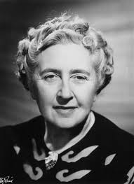
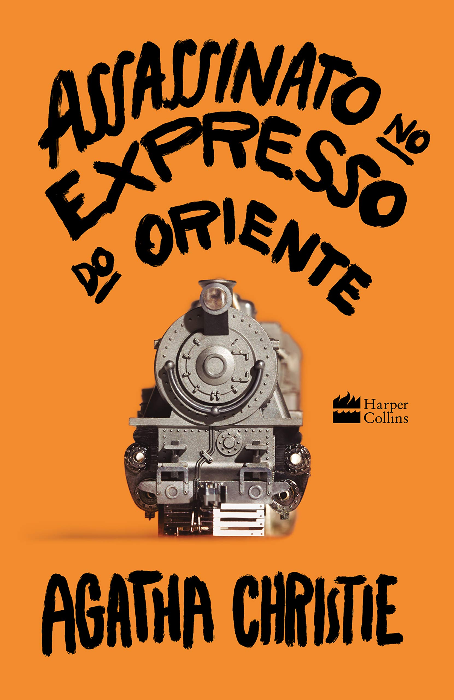
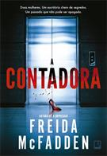

|  | Agatha Christie |
|  | Em meio a uma viagem, Hercule Poirot é surpreendido por um telegrama solicitando seu retorno a Londres.
Logo o famoso detetive belga embarca no Expresso do Oriente, que está inesperadamente cheio para aquela época do ano. Pouco após a meia-noite, o excesso de neve nos trilhos obriga o trem a parar, e na manhã seguinte, o corpo de um dos passageiros é encontrado, golpeado por múltiplas facadas. Isolados e com um assassino entre eles, a única solução de Poirot é iniciar uma investigação, reunindo todas as pistas e os suspeitos para chegar à conclusão de quem é o criminoso ― antes que ele faça mais uma vítima. |
| Freida Macfeidden |
|  | Dawn Schiff é uma pessoa estranha. Ou ao menos é o que pensam todos os funcionários da Vixed, a empresa de suplementos alimentares onde Dawn trabalha como contadora. Ela não consegue entender ironia, parece nunca saber a coisa certa a dizer, não tem nenhum amigo e seu dia é perfeitamente cronometrado – ela se senta à mesa às 8h45, vai ao banheiro às 10h15, almoça às 11h45, vai uma segunda vez ao banheiro às 14h30 e encerra o dia às 17h. Por isso, quando Dawn não aparece no escritório certa manhã, sua colega de trabalho Natalie Farrell, uma mulher linda e carismática, a melhor vendedora da Vixed por cinco anos consecutivos, fica surpresa. E essa surpresa se transforma em horror depois que ela atende uma ligação anônima e perturbadora na mesa de Dawn… Isso muda tudo. Ao que parece, Dawn não era só uma pessoa esquisita e sem traquejo social: ela foi alvo de algo terrível causado por alguém próximo. E agora Natalie está irremediavelmente ligada à contadora quando se vê presa em um jogo de gato e rato que a leva a se perguntar: quem é a verdadeira vítima nessa história? Mas uma coisa é certa: alguém odiava Dawn Schiff. O suficiente para matá-la. |